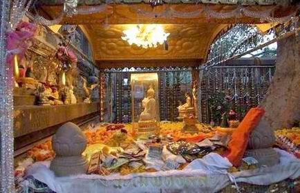

|
ประวัติต้นพระศรีมหาโพธิ์
ณ พุทธคยา สถานที่พระพุทธเจ้าตรัสรู้ พระอนุตตรสัมมาสัมโพธิญาณ นำเสนอโดย... พระมหาบุญโฮม ปริปุณฺณสีโล ป.ธ.๕,น.ธ.เอก,ศษ.บ. วัดท่าไทร จังหวัดสุราษฎร์ธานี |
|
องค์สมเด็จพระสัมมาสัมพุทธเจ้า ทรงตรัสรู้ที่โคนต้นพระศรีมหาโพธิ์ริมฝั่งแม่น้ำเนรัญชรา ปัจจุบันเรียกว่า แม่น้ำลีลาพัฒน์หรือแม่น้ำฟัลดูร์ ในรัฐพิหารของอินเดีย ซึ่งต้นพระศรีมหาโพธิ์ ถือเป็นต้นไม้ที่มีความสำคัญในทางพระพุทธศาสนา
พุทธคยา ถือเป็นสถานที่ตรัสรู้ของพระพุทธเจ้า โดยมีต้นพระศรีมหาโพธิ์รวมทั้งหมด ๔ ต้น และทั้ง ๔ ต้นนี้ได้เจริญเติบโตทดแทนกันมาเรื่อยๆ และมีประวัติความเป็นมาอันยาวนาน นับเป็นอนุสรณ์สถานที่มีคุณค่า ของชาวพุทธและมวลมนุษยชาติทั่วโลก 
ต้นพระศรีมหาโพธิ์ต้นที่หนึ่ง เป็นต้นที่พระพุทธเจ้าทรงตรัสรู้ พระองค์ได้รับการถวายหญ้า ๘ กำ จากโสตถิยะพราหมณ์เพื่อปูเป็นที่ประทับเมื่อใกล้รุ่งของวันเพ็ญ เดือน ๖ จึงตรัสรู้เป็นพระสัมมาสัมพุทธเจ้า และหลังจากที่พระพุทธองค์เสด็จดับขันธ์ปรินิพพานแล้ว มีผู้เลื่อมใสศรัทธามากราบไหว้ต้นพระศรีมหาโพธิ์ เป็นจำนวนมาก ในสมัยพระเจ้าอโศกมหาราช พระองค์ทรงเป็นองค์อุปถัมภ์ ทำให้พระพุทธศาสนาเจริญรุ่งเรือง มาก ซึ่งทำให้พระเจ้าอโศกมหาราชไม่สนพระทัยในความสุขส่วนพระองค์เหมือนเช่นเคย เป็นเหตุให้เหล่านางสนม ต่างพากันโกรธแค้นต้นพระศรีมหาโพธิ์ พระมเหสีองค์ที่ ๔ ของพระเจ้าอโศกมหาราชจึงได้สั่งสาวใช้ให้นำยาพิษ และน้ำร้อนไปรดที่โคนต้นพระศรีมหาโพธิ์จนตายในที่สุด การตายของต้นพระศรีมหาโพธิ์ทำให้พระเจ้าอโศกมหาราช ทรงเสียพระทัยมาก ทรงรับสั่งให้ใช้น้ำนมโค ๑๐๐ หม้อ ไปรดที่บริเวณรากของต้นโพธิ์ และทรงนอนคว่ำหน้าลง กับพื้นเหมือนการกราบไหว้ของพระทิเบต พระองค์ทรงมีพระราชปรารภว่า ถ้าต้นพระศรีมหาโพธิ์ไม่แตกหน่อ จะไม่ลุกขึ้น แต่ต้นพระศรีมหาโพธิ์ก็แตกหน่อขึ้นมาใหม่ พระองค์จึงสั่งให้ก่อกำแพงล้อมรอบ เพื่อป้องกัน อันตรายที่จะเกิดขึ้นกับต้นโพธิ์อีก
ต้นพระศรีมหาโพธิ์ต้นที่สาม ในปี พ.ศ. ๒๔๑๘ ท่านเซอร์คันนิ่งแฮมได้เดินทางไปที่พุทธคยาเป็น ครั้งที่สอง พบว่าต้นพระศรีมหาโพธิ์ทรุดโทรมมาก ประชาชนชาวฮินดูในบริเวณนั้นได้ตัดกิ่งก้านไปทำเชื้อเพลิง และในปี พ.ศ. ๒๔๒๑ ต้นพระศรีมหาโพธิ์ได้ล้มลงไปทางทิศตะวันตก ต้นพระศรีมหาโพธิ์ต้นที่สามมีอายุครบ ประมาณ ๑๒๕๘-๑๒๗๘ ปี
ต้นพระศรีมหาโพธิ์ต้นที่สี่ เป็นต้นที่ยังคงอยู่ที่พุทธคยาในปัจจุบัน เป็นหนึ่งในสองหน่อที่แตก ขึ้นมาจากต้นพระศรีมหาโพธิ์ต้นที่สามที่ล้ม โดยท่านเซอร์คันนิ่งแฮมได้ขุดหน่อที่สมบูรณ์ขึ้นมาปลูก เมื่อปี พ.ศ. ๒๔๒๓ ปลูกไว้ห่างจากพื้นที่เดิมที่เป็นชายฝั่งแม่น้ำเนรัญชราไปประมาณ ๑๐๐ เมตร
|
|
|